16. ماجراهایی با مشتقگیری خودکار#
GPU
This lecture was built using a machine with access to a GPU — although it will also run without one.
Google Colab has a free tier with GPUs that you can access as follows:
Click on the “play” icon top right
Select Colab
Set the runtime environment to include a GPU
16.1. مرور کلی#
این درس مقدمهای جامعتر بر مشتقگیری خودکار با استفاده از Google JAX ارائه میدهد و بر پایه معرفی مختصر قبلی ما بنا شده است.
مشتقگیری خودکار یکی از عناصر کلیدی یادگیری ماشین و هوش مصنوعی مدرن است.
به همین دلیل، سرمایهگذاری قابل توجهی بر روی آن انجام شده و پیادهسازیهای قدرتمند متعددی در دسترس است.
یکی از بهترین این پیادهسازیها، روتینهای مشتقگیری خودکار موجود در JAX است.
در حالی که سایر بستههای نرمافزاری نیز این قابلیت را ارائه میدهند، نسخه JAX به ویژه قدرتمند است زیرا به خوبی با سایر اجزای اصلی JAX (مانند کامپایل JIT و موازیسازی) ادغام میشود.
مشتقگیری خودکار نه تنها برای هوش مصنوعی، بلکه برای بسیاری از مسائل مدلسازی ریاضی نیز قابل استفاده است؛ از جمله بهینهسازی غیرخطی چندبُعدی و مسائل یافتن ریشه.
علاوه بر آنچه در Anaconda موجود است، این درس به کتابخانههای زیر نیاز دارد:
!pip install jax
به واردسازیهای زیر نیاز داریم:
import jax
import jax.numpy as jnp
import matplotlib.pyplot as plt
import numpy as np
from sympy import symbols
16.2. مشتقگیری خودکار چیست؟#
مشتقگیری خودکار (Autodiff) تکنیکی برای محاسبه مشتقات روی کامپیوتر است.
16.2.1. مشتقگیری خودکار، تفاضل محدود نیست#
مشتق \(f(x) = \exp(2x)\) برابر است با:
یک کامپیوتر که نمیداند چگونه مشتق بگیرد، ممکن است این مشتق را با نسبت تفاضل محدود تقریب بزند:
که در آن \(h\) یک عدد مثبت کوچک است.
def f(x):
"Original function."
return np.exp(2 * x)
def f_prime(x):
"True derivative."
return 2 * np.exp(2 * x)
def Df(x, h=0.1):
"Approximate derivative (finite difference)."
return (f(x + h) - f(x))/h
x_grid = np.linspace(-2, 1, 200)
fig, ax = plt.subplots()
ax.plot(x_grid, f_prime(x_grid), label="$f'$")
ax.plot(x_grid, Df(x_grid), label="$Df$")
ax.legend()
plt.show()
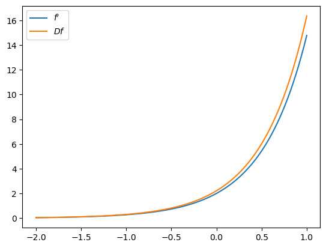
این نوع مشتق عددی اغلب نادقیق و ناپایدار است.
یکی از دلایل آن این است که:
اعداد کوچک در صورت و مخرج باعث خطاهای گرد کردن میشوند.
این وضعیت در ابعاد بالا و با مشتقات مرتبه بالاتر به صورت نمایی بدتر میشود.
16.2.2. مشتقگیری خودکار، حساب نمادین نیست#
حساب نمادین تلاش میکند از قواعد مشتقگیری برای تولید یک عبارت بسته واحد که نمایانگر مشتق است استفاده کند.
m, a, b, x = symbols('m a b x')
f_x = (a*x + b)**m
f_x.diff((x, 6)) # 6-th order derivative
حساب نمادین برای محاسبات با کارایی بالا مناسب نیست.
یک نقطه ضعف این است که حساب نمادین نمیتواند از طریق جریان کنترل مشتق بگیرد.
همچنین، استفاده از حساب نمادین ممکن است شامل محاسبات اضافی باشد.
به عنوان مثال، در نظر بگیرید:
اگر در \(x\) ارزیابی کنیم، \(f(x)\) و \(g(x)\) هرکدام دو بار ارزیابی میشوند.
همچنین، محاسبه \(f'(x)\) و \(f(x)\) ممکن است شامل جملات مشترک باشد (مثلاً \(f(x) = \exp(2x) \implies f'(x) = 2f(x)\)) اما این در جبر نمادین مورد بهرهبرداری قرار نمیگیرد.
16.2.3. مشتقگیری خودکار#
مشتقگیری خودکار توابعی تولید میکند که مشتقات را در مقادیر عددی ارسالشده توسط کد فراخوان ارزیابی میکنند، نه اینکه یک عبارت نمادین واحد نمایانگر کل مشتق تولید کنند.
مشتقات با تجزیه محاسبات به اجزای کوچکتر از طریق قاعده زنجیر ساخته میشوند.
قاعده زنجیر تا جایی اعمال میشود که جملات به توابع پایهای تقلیل یابند که برنامه میداند چگونه به طور دقیق از آنها مشتق بگیرد (جمع، تفریق، توانگیری، سینوس و کسینوس و غیره).
16.3. برخی آزمایشها#
بیایید با برخی توابع مقدار حقیقی روی \(\mathbb R\) شروع کنیم.
16.3.1. یک تابع قابل مشتقگیری#
بیایید مشتقگیری خودکار JAX را با یک تابع نسبتاً ساده آزمایش کنیم.
def f(x):
return jnp.sin(x) - 2 * jnp.cos(3 * x) * jnp.exp(- x**2)
از grad برای محاسبه گرادیان یک تابع مقدار حقیقی استفاده میکنیم:
f_prime = jax.grad(f)
بیایید نتیجه را رسم کنیم:
x_grid = jnp.linspace(-5, 5, 100)
fig, ax = plt.subplots()
ax.plot(x_grid, [f(x) for x in x_grid], label="$f$")
ax.plot(x_grid, [f_prime(x) for x in x_grid], label="$f'$")
ax.legend()
plt.show()
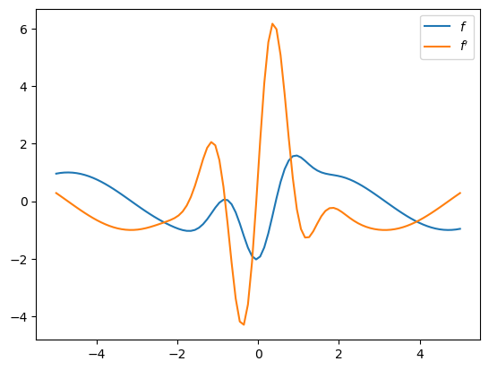
16.3.2. تابع قدر مطلق#
اگر تابع قابل مشتقگیری نباشد چه اتفاقی میافتد؟
def f(x):
return jnp.abs(x)
f_prime = jax.grad(f)
fig, ax = plt.subplots()
ax.plot(x_grid, [f(x) for x in x_grid], label="$f$")
ax.plot(x_grid, [f_prime(x) for x in x_grid], label="$f'$")
ax.legend()
plt.show()
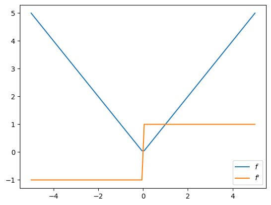
در نقطه غیرقابل مشتقگیری \(0\)، jax.grad مشتق راست را برمیگرداند:
f_prime(0.0)
Array(1., dtype=float32, weak_type=True)
16.3.3. مشتقگیری از طریق جریان کنترل#
بیایید سعی کنیم از طریق برخی حلقهها و شرطها مشتق بگیریم.
def f(x):
def f1(x):
for i in range(2):
x *= 0.2 * x
return x
def f2(x):
x = sum((x**i + i) for i in range(3))
return x
y = f1(x) if x < 0 else f2(x)
return y
f_prime = jax.grad(f)
x_grid = jnp.linspace(-5, 5, 100)
fig, ax = plt.subplots()
ax.plot(x_grid, [f(x) for x in x_grid], label="$f$")
ax.plot(x_grid, [f_prime(x) for x in x_grid], label="$f'$")
ax.legend()
plt.show()
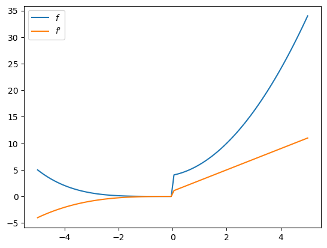
16.3.4. مشتقگیری از طریق درونیابی خطی#
میتوانیم از طریق درونیابی خطی مشتق بگیریم، حتی اگر تابع هموار نباشد:
n = 20
xp = jnp.linspace(-5, 5, n)
yp = jnp.cos(2 * xp)
fig, ax = plt.subplots()
ax.plot(x_grid, jnp.interp(x_grid, xp, yp))
plt.show()
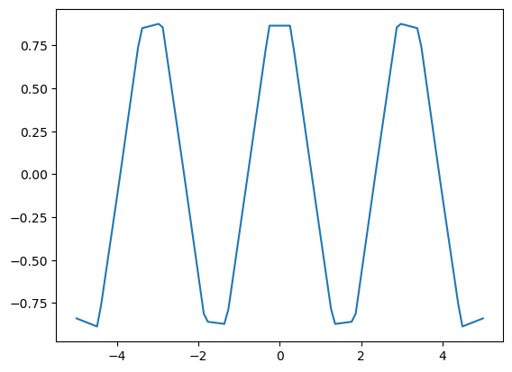
f_prime = jax.grad(jnp.interp)
f_prime_vec = jax.vmap(f_prime, in_axes=(0, None, None))
fig, ax = plt.subplots()
ax.plot(x_grid, f_prime_vec(x_grid, xp, yp))
plt.show()
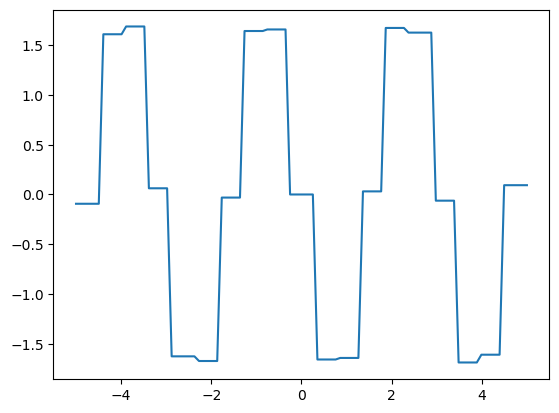
16.4. گرادیان کاهشی#
بیایید پیادهسازی گرادیان کاهشی را امتحان کنیم.
به عنوان یک کاربرد ساده، از گرادیان کاهشی برای یافتن برآوردهای پارامتر حداقل مربعات معمولی در رگرسیون خطی ساده استفاده خواهیم کرد.
16.4.1. یک تابع برای گرادیان کاهشی#
در اینجا یک پیادهسازی از گرادیان کاهشی ارائه شده است.
def grad_descent(f, # Function to be minimized
args, # Extra arguments to the function
x0, # Initial condition
λ=0.1, # Initial learning rate
tol=1e-5,
max_iter=1_000):
"""
Minimize the function f via gradient descent, starting from guess x0.
The learning rate is computed according to the Barzilai-Borwein method.
"""
f_grad = jax.grad(f)
x = jnp.array(x0)
df = f_grad(x, args)
ϵ = tol + 1
i = 0
while ϵ > tol and i < max_iter:
new_x = x - λ * df
new_df = f_grad(new_x, args)
Δx = new_x - x
Δdf = new_df - df
λ = jnp.abs(Δx @ Δdf) / (Δdf @ Δdf)
ϵ = jnp.max(jnp.abs(Δx))
x, df = new_x, new_df
i += 1
return x
16.4.2. دادههای شبیهسازیشده#
ما میخواهیم تابع گرادیان کاهشی خود را با کمینهسازی مجموع مربعات کمترین در یک مسئله رگرسیون آزمایش کنیم.
بیایید برخی دادههای شبیهسازیشده تولید کنیم:
n = 100
key = jax.random.key(1234)
x = jax.random.uniform(key, (n,))
α, β, σ = 0.5, 1.0, 0.1 # Set the true intercept and slope.
key, subkey = jax.random.split(key)
ϵ = jax.random.normal(subkey, (n,))
y = α * x + β + σ * ϵ
fig, ax = plt.subplots()
ax.scatter(x, y)
plt.show()
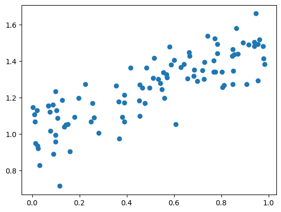
بیایید با محاسبه شیب و عرض از مبدأ برآوردشده با استفاده از راهحلهای فرم بسته شروع کنیم.
mx = x.mean()
my = y.mean()
α_hat = jnp.sum((x - mx) * (y - my)) / jnp.sum((x - mx)**2)
β_hat = my - α_hat * mx
α_hat, β_hat
(Array(0.49340877, dtype=float32), Array(1.0055456, dtype=float32))
fig, ax = plt.subplots()
ax.scatter(x, y)
ax.plot(x, α_hat * x + β_hat, 'k-')
ax.text(0.1, 1.55, rf'$\hat \alpha = {α_hat:.3}$')
ax.text(0.1, 1.50, rf'$\hat \beta = {β_hat:.3}$')
plt.show()
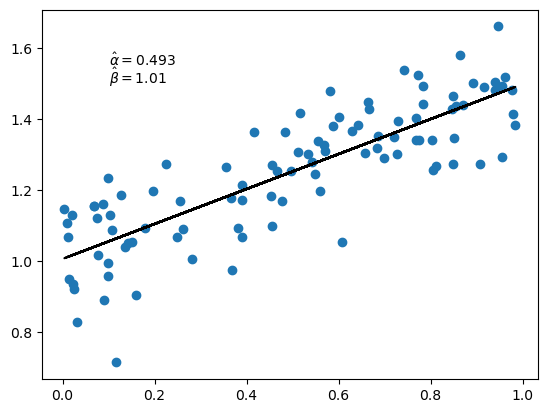
16.4.3. کمینهسازی تابع زیان مربعات با گرادیان کاهشی#
بیایید ببینیم آیا میتوانیم همان مقادیر را با تابع گرادیان کاهشی خود به دست آوریم.
ابتدا تابع زیان کمترین مربعات را تنظیم میکنیم.
@jax.jit
def loss(params, data):
a, b = params
x, y = data
return jnp.sum((y - a * x - b)**2)
حال آن را کمینه میکنیم:
p0 = jnp.zeros(2) # Initial guess for α, β
data = x, y
α_hat, β_hat = grad_descent(loss, data, p0)
بیایید نتایج را رسم کنیم.
fig, ax = plt.subplots()
x_grid = jnp.linspace(0, 1, 100)
ax.scatter(x, y)
ax.plot(x_grid, α_hat * x_grid + β_hat, 'k-', alpha=0.6)
ax.text(0.1, 1.55, rf'$\hat \alpha = {α_hat:.3}$')
ax.text(0.1, 1.50, rf'$\hat \beta = {β_hat:.3}$')
plt.show()
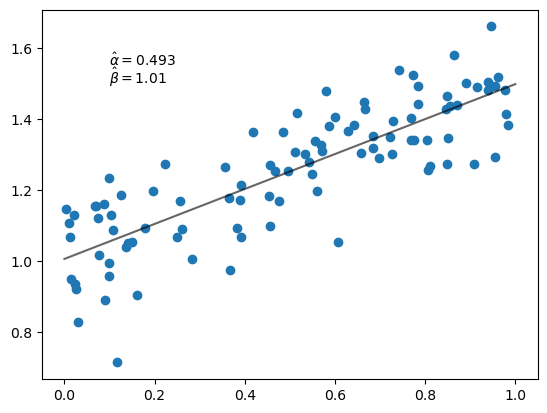
توجه کنید که همان برآوردهایی را به دست میآوریم که از راهحلهای فرم بسته به دست آوردیم.
16.4.4. افزودن یک جمله مربعی#
حال بیایید برازش یک چندجملهای مرتبه دوم را امتحان کنیم.
این تابع زیان جدید ماست.
@jax.jit
def loss(params, data):
a, b, c = params
x, y = data
return jnp.sum((y - a * x**2 - b * x - c)**2)
اکنون در سه بُعد کمینهسازی میکنیم.
بیایید آن را امتحان کنیم.
p0 = jnp.zeros(3)
α_hat, β_hat, γ_hat = grad_descent(loss, data, p0)
fig, ax = plt.subplots()
ax.scatter(x, y)
ax.plot(x_grid, α_hat * x_grid**2 + β_hat * x_grid + γ_hat, 'k-', alpha=0.6)
ax.text(0.1, 1.55, rf'$\hat \alpha = {α_hat:.3}$')
ax.text(0.1, 1.50, rf'$\hat \beta = {β_hat:.3}$')
plt.show()
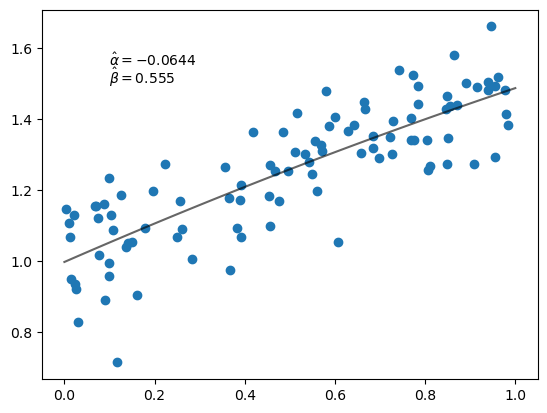
16.5. تمرینها#
Exercise 16.1
تابع jnp.polyval چندجملهایها را ارزیابی میکند.
به عنوان مثال، اگر len(p) برابر با ۳ باشد، jnp.polyval(p, x) مقدار زیر را برمیگرداند:
از این تابع برای رگرسیون چندجملهای استفاده کنید.
تابع زیان (تجربی) به صورت زیر است:
مقدار \(k=4\) را تنظیم کنید و حدس اولیه params را برابر jnp.zeros(k) قرار دهید.
از گرادیان کاهشی برای یافتن آرایه params که تابع زیان را کمینه میکند استفاده کنید و نتیجه را رسم کنید (مشابه مثالهای بالا).
Solution to Exercise 16.1
یک راهحل ممکن به این صورت است.
def loss(params, data):
x, y = data
return jnp.sum((y - jnp.polyval(params, x))**2)
k = 4
p0 = jnp.zeros(k)
p_hat = grad_descent(loss, data, p0)
print('Estimated parameter vector:')
print(p_hat)
print('\n\n')
fig, ax = plt.subplots()
ax.scatter(x, y)
ax.plot(x_grid, jnp.polyval(p_hat, x_grid), 'k-', alpha=0.6)
plt.show()
Estimated parameter vector:
[-0.6806411 0.9491472 0.16280958 1.0229238 ]
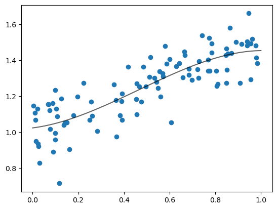